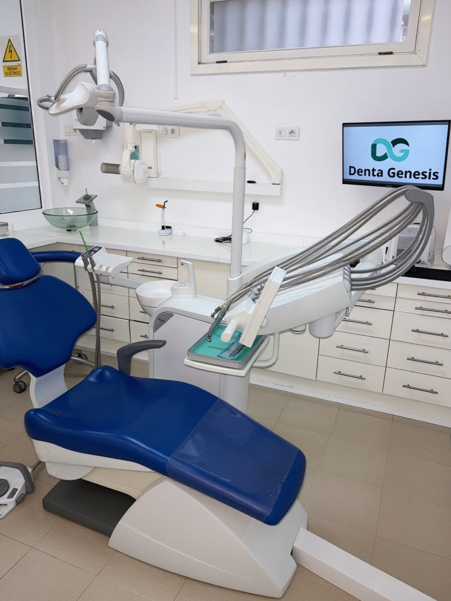

Masticas con fuerza
Vuelves a comer carne, fruta o pan con una eficacia parecida a la de los dientes naturales.
Implantología · La Orotava
Una arcada completa de dientes fijos anclada sobre 4 o 6 implantes. Para quienes han perdido todos los dientes o están cansados de una dentadura postiza que se mueve.

Adiós a los adhesivosdientes fijos que no se mueven
En qué consiste
La dentadura fija sobre implantes es una prótesis completa que se atornilla a 4 implantes (All-on-4) o a 6 implantes (All-on-6). No se quita, no necesita adhesivos y no cubre el paladar, así que vuelves a notar el sabor y la temperatura de la comida.
Los implantes de la parte posterior pueden colocarse ligeramente inclinados para aprovechar al máximo el hueso disponible, lo que en muchos casos evita tener que hacer injertos. Y, cuando el caso lo permite, se combina con la carga inmediata para que salgas de la clínica con dientes fijos el mismo día.
Indicaciones
Ventajas
Vuelves a comer carne, fruta o pan con una eficacia parecida a la de los dientes naturales.
La prótesis superior no cubre el paladar: más comodidad y todo el sabor de la comida.
Nada que se mueva, que se caiga o que te haga heridas en la encía.
Los dientes fijos devuelven el apoyo a labios y mejillas y rejuvenecen la expresión.
Comparativa
| Aspecto | Fija sobre implantes | Postiza removible |
|---|---|---|
| Estabilidad | Atornillada, no se mueve | Puede moverse o caerse |
| Paladar | Libre | Cubierto en la prótesis superior |
| Masticación | Similar a los dientes naturales | Muy reducida |
| Hueso | Se estimula y se conserva | Se sigue perdiendo con los años |
| Adhesivos | Nunca | Con frecuencia |
Paso a paso
Estudio radiológico, fotografías y registros para planificar la posición de los implantes y el diseño de tus nuevos dientes.
Con anestesia local realizamos las extracciones necesarias y colocamos los 4 o 6 implantes en una sola intervención.
En muchos casos el mismo día, o en pocos días, fijamos una prótesis provisional a los implantes.
Tras la integración colocamos la prótesis definitiva, más resistente y con un acabado estético de máxima calidad.
¿Tienes dudas sobre tu caso?
En la primera visita te lo explicamos todo, sin compromiso.
Preguntas frecuentes
¿Tienes otra pregunta? Escríbenos o llámanos y te atendemos encantados.
Depende de la cantidad de hueso, del tamaño de la arcada y de la fuerza de tu mordida. Seis implantes reparten más la carga; cuatro bien posicionados permiten soluciones fijas incluso con poco hueso. Te recomendaremos la opción más segura para ti.
Tú no la quitas: va atornillada a los implantes. Solo la retiramos en la clínica cuando hace falta una limpieza a fondo o un ajuste.
La colocación inclinada de los implantes posteriores permite aprovechar el hueso disponible y muchas veces evita injertos. Si fuera necesario, recurrimos a técnicas de regeneración ósea.
Con cepillo, irrigador bucal y seda dental especial. Te enseñamos la técnica paso a paso y te revisamos cada 6 meses para mantenerla en perfecto estado.
El precio depende del número de implantes, del tipo de prótesis definitiva y de si se necesitan tratamientos previos. Tras el estudio te entregamos un presupuesto cerrado por arcada y te explicamos las opciones de financiación.
También te puede interesar
Implantes y dientes provisionales fijos el mismo día, cuando el caso lo permite.
Ver tratamientoSi falta hueso, lo regeneramos para colocar implantes con total garantía y estabilidad.
Ver tratamientoCoronas, puentes y prótesis removibles a medida, con materiales de alta calidad.
Ver tratamientoContacto
Av. Mayorazgo de Franchi, 16
Edf. Montymar, Local 1
38300 La Orotava, Santa Cruz de Tenerife
Lunes, martes, miércoles y viernes
9:00 – 17:00
Jueves
11:00 – 19:00